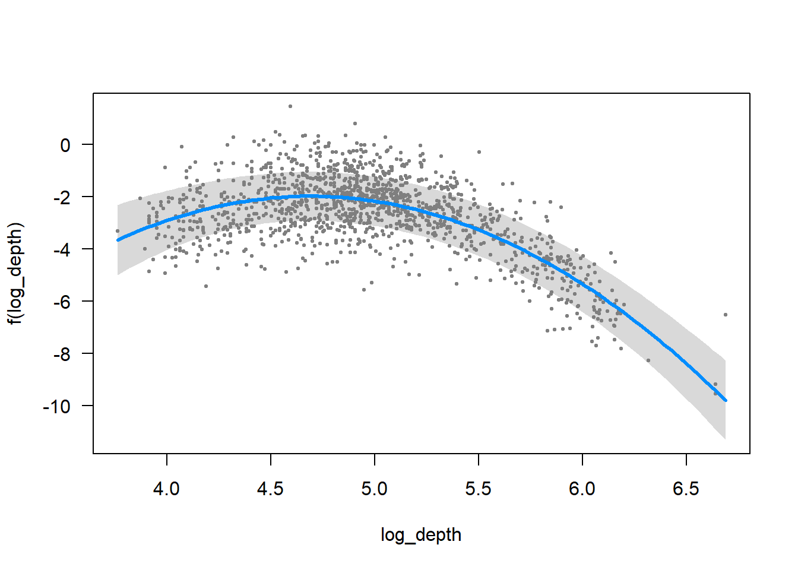
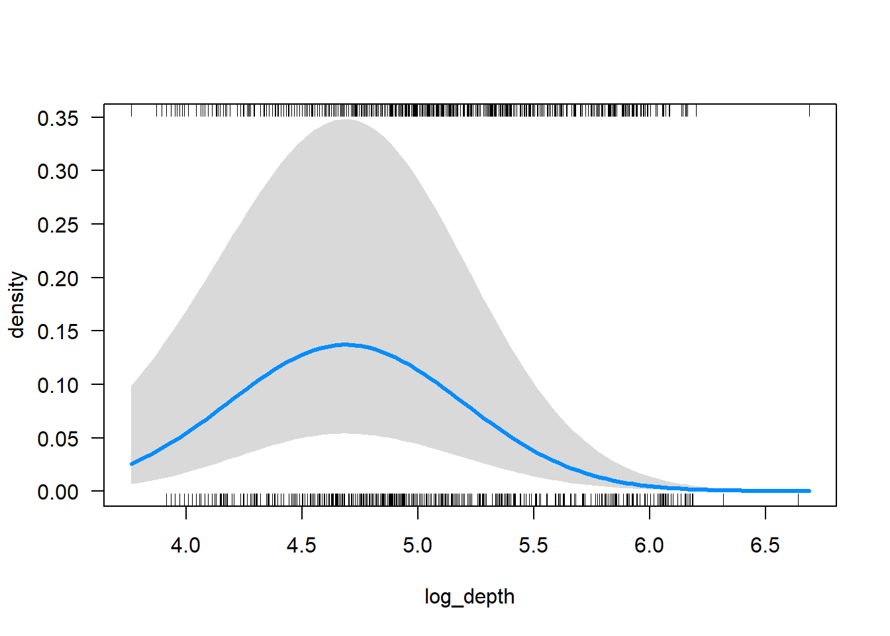
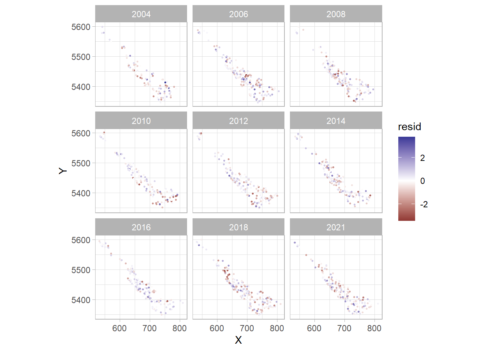
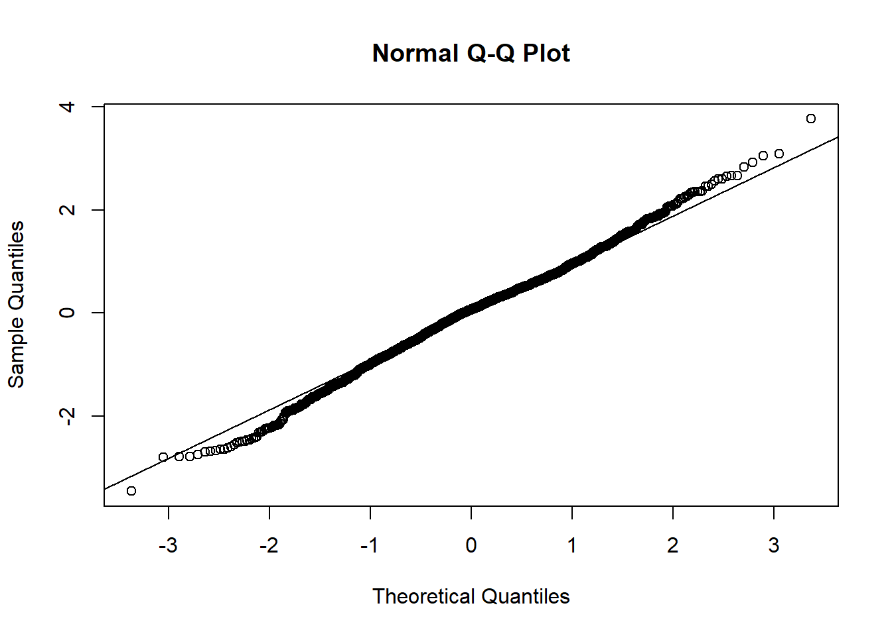
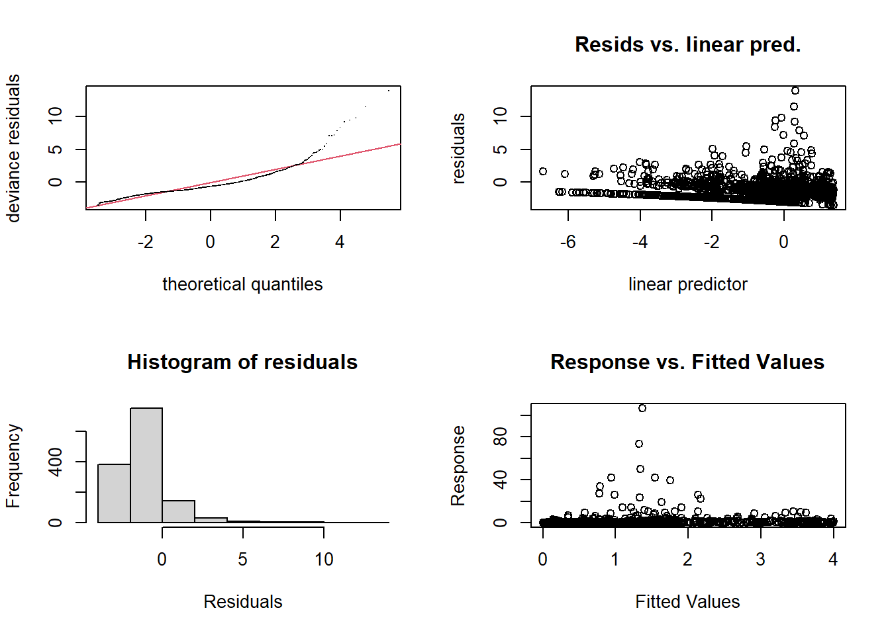
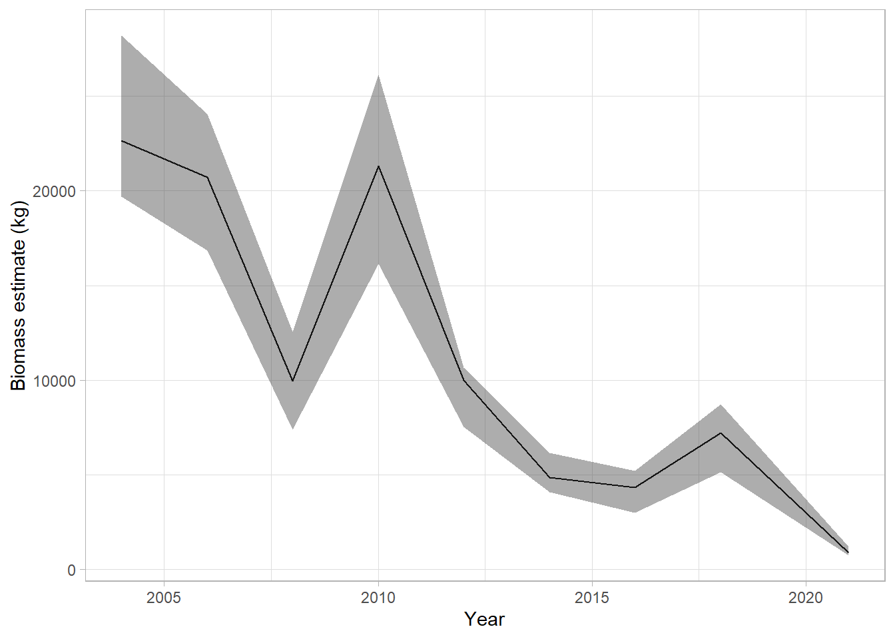

dat <- readRDS(here::here("uw-survey-2026/data/wcvi-dogfish.rds"))Fitting a spatiotemporal model and deriving an abundance index
Goals:
- Practice fitting a basic spatiotemporal model.
- Understand how to inspect the model output.
- Practice predicting from the model on new data and making visualizations of those predictions.
- Gain familiarity with fitting, comparing and interpreting different random field structures.
- Calculate an area-weighted biomass index and compare how model structure can impact an index.
The data
We will work with data representing North Pacific Spiny Dogfish in the West Coast Vancouver Island synoptic trawl survey.
head(dat)# A tibble: 6 × 5
longitude latitude year depth density
<dbl> <dbl> <int> <dbl> <dbl>
1 -126. 48.4 2004 140 4.56
2 -126. 48.4 2004 145 0.395
3 -126. 48.3 2004 320 0.124
4 -126. 48.4 2004 554 0
5 -126. 48.4 2004 279 0
6 -126. 48.7 2004 117 0.497The dataset contains sampling locations (longitude and latitude) and year. It also contains sampling depth in meters and sample density density (CPUE) in units of tonnes/km2.
ggplot(dat, aes(longitude, latitude, size = density)) + geom_point()
Adding UTMs
We can add UTM columns using add_utm_columns():
add_utm_columns(dat, ll_names = c("longitude", "latitude"))Warning: Multiple UTM zones detected.
Proceeding with the most common value.
You may wish to choose a different projection.Proceeding with UTM zone 9N; CRS = 32609.Visit https://epsg.io/32609 to verify.# A tibble: 1,333 × 7
longitude latitude year depth density X Y
<dbl> <dbl> <int> <dbl> <dbl> <dbl> <dbl>
1 -126. 48.4 2004 140 4.56 744. 5362.
2 -126. 48.4 2004 145 0.395 737. 5362.
3 -126. 48.3 2004 320 0.124 729. 5356.
4 -126. 48.4 2004 554 0 725. 5362.
5 -126. 48.4 2004 279 0 712. 5368.
6 -126. 48.7 2004 117 0.497 734. 5403.
7 -126. 48.7 2004 70 0.558 731. 5394.
8 -126. 48.6 2004 61 0.610 737. 5393.
9 -126. 48.6 2004 77 0.767 731. 5383.
10 -126. 48.5 2004 92 8.45 734. 5377.
# ℹ 1,323 more rowsNote that this function guesses at an appropriate UTM projection for you and provides a URL to verify. To ensure future compatibility with prediction grids or other data, it is best to hard code the choice using the utm_crs argument. We will use CRS = 3156 here to match our prediction grid:
dat <- add_utm_columns(dat, utm_crs = 3156, ll_names = c("longitude", "latitude"))And check to make sure that looks right:
ggplot(dat, aes(X, Y, size = density)) + geom_point(shape = 21) + coord_fixed()
We can also plot the data by year:
ggplot(dat, aes(X, Y, size = density, colour = log(density + 1))) +
geom_point(alpha = 0.3) +
facet_wrap(~year) + coord_fixed()
We will create these new columns to use later:
dat$log_depth <- log(dat$depth)
dat$year_factor <- as.factor(dat$year)Constructing a mesh
We start by constructing an SPDE mesh with INLA. This creates some matrices that are used internally when fitting the model. We will use the shortcut function make_mesh() and use a cutoff (minimum triangle length of 10 km). Note: this is the only parameter that can be changed in make_mesh() but more control over mesh arguments can be done with INLA (inla.mesh.2d()).
mesh <- make_mesh(dat, xy_cols = c("X", "Y"), cutoff = 10)
plot(mesh)
mesh$mesh$n # number of vertices or knots[1] 139# ggplot alternative:
ggplot() + inlabru::gg(mesh$mesh) + coord_fixed() +
geom_point(aes(X, Y), data = dat, alpha = 0.2, size = 0.5)Registered S3 methods overwritten by 'inlabru':
method from
$.fm_crs fmesher
print.fm_crs fmesherLoading required namespace: INLA
Exercise:
- Try adjusting the size of the cutoff distance to explore the effects of decreasing the mesh resolution. Make sure to reset the
cutoffvalue to10in the end so the rest of the exercise behaves as intended, because model convergence issues can be caused by meshes that are either too fine or too coarse.
Fitting a spatial model
The most basic model we could fit would be a model with a single spatial random field, and no covariates. Using silent = FALSE lets us see what is happening, but it’s awkward when running code in Rmd/Quarto chunks (with the default RStudio setting to ‘Show output inline for all R Markdown document’) so we will comment it out in most cases here. But it is a good idea to use it if models are running slowly or not converging to monitor progress.
fit_spatial <- sdmTMB(
density ~ 1, # intercept only
data = dat,
family = tweedie(link = "log"),
mesh = mesh,
spatial = "on",
# silent = FALSE
)sanity(fit_spatial)✔ Non-linear minimizer suggests successful convergence✔ Hessian matrix is positive definite✔ No extreme or very small eigenvalues detected✖ `thetaf` gradient > 0.001ℹ See ?run_extra_optimization(), standardize covariates, and/or simplify the model✔ No fixed-effect standard errors are NA✔ No standard errors look unreasonably large✔ No sigma parameters are < 0.01✔ No sigma parameters are > 100✔ Range parameter doesn't look unreasonably largeDid it have trouble? If so, try an extra optimization run and see if that’s sufficient:
fit_spatial <- run_extra_optimization(fit_spatial)attempting to improve convergence with Newton update(s)
retaining parameters from before Newton update
and skipping further Newton updatessanity(fit_spatial)✔ Non-linear minimizer suggests successful convergence
✔ Hessian matrix is positive definite
✔ No extreme or very small eigenvalues detected
✖ `thetaf` gradient > 0.001
ℹ See ?run_extra_optimization(), standardize covariates, and/or simplify the model✔ No fixed-effect standard errors are NA
✔ No standard errors look unreasonably large
✔ No sigma parameters are < 0.01
✔ No sigma parameters are > 100
✔ Range parameter doesn't look unreasonably largefit_spatialSpatial model fit by ML ['sdmTMB']
Formula: density ~ 1
Mesh: mesh (isotropic covariance)
Data: dat
Family: tweedie(link = 'log')
Conditional model:
coef.est coef.se
(Intercept) -1.97 0.57
Dispersion parameter: 2.78
Tweedie p: 1.75
Matérn range: 28.16
Spatial SD: 2.25
ML criterion at convergence: 1350.663
See ?tidy.sdmTMB to extract these values as a data frame.
**Possible issues detected! Check output of sanity().**We won’t dwell on this model here for the sake of time, but in practice we would stop, inspect, and understand this model before progressing to a spatiotemporal model.
Fitting a model with spatial + spatiotemporal fields
This first model includes a quadratic effect of log depth (poly(log_depth, 2)), a factor effect for each year, and models total density using a Tweedie distribution and a log link. The spatial field and spatiotemporal fields are estimated.
The year factors give each year its own mean (this is generally the approach used in fisheries stock assessment). The 0 + omits the intercept such that each year’s estimate represents a mean as opposed to a difference from the intercept. This part is arbitrary and chosen for the sake of this exercise.
The choice to use log depth helps the model fit because we have fewer samples from the deeper depths.
fit <- sdmTMB(
density ~ 0 + year_factor + poly(log_depth, 2),
data = dat,
family = tweedie(link = "log"),
mesh = mesh,
spatial = "on",
spatiotemporal = "iid", #< new
time = "year", #< new
# silent = FALSE
)Print the model:
fitSpatiotemporal model fit by ML ['sdmTMB']
Formula: density ~ 0 + year_factor + poly(log_depth, 2)
Mesh: mesh (isotropic covariance)
Time column: character
Data: dat
Family: tweedie(link = 'log')
Conditional model:
coef.est coef.se
year_factor2004 -1.65 0.50
year_factor2006 -1.39 0.47
year_factor2008 -2.40 0.49
year_factor2010 -1.43 0.49
year_factor2012 -2.85 0.50
year_factor2014 -2.97 0.51
year_factor2016 -2.89 0.50
year_factor2018 -2.68 0.47
year_factor2021 -4.54 0.52
poly(log_depth, 2)1 -27.19 4.96
poly(log_depth, 2)2 -25.14 3.23
Dispersion parameter: 0.96
Tweedie p: 1.62
Matérn range: 25.42
Spatial SD: 1.23
Spatiotemporal IID SD: 1.86
ML criterion at convergence: 927.045
See ?tidy.sdmTMB to extract these values as a data frame.Run a basic sanity check on the model:
sanity(fit)✔ Non-linear minimizer suggests successful convergence✔ Hessian matrix is positive definite✔ No extreme or very small eigenvalues detected✔ No gradients with respect to fixed effects are >= 0.001✔ No fixed-effect standard errors are NA✔ No standard errors look unreasonably large✔ No sigma parameters are < 0.01✔ No sigma parameters are > 100✔ Range parameter doesn't look unreasonably largeThere are multiple ways we can plot the depth effect on density. The first approach is to pass the sdmTMB object to the visreg package. This shows the conditional effect, where all values other than depth are held at a particular value. Note the default visreg plot is in link (here, log) space and the dots are randomized quantile residuals.
visreg::visreg(fit, xvar = "log_depth")
visreg::visreg(fit, xvar = "log_depth", scale = "response")
Second, we could use the ggeffects package, which can be used to show the marginal effects of predictors (averaging over all other covariates rather than using a single fixed value). For more details see the visualizing marginal effects vignette. Note that won’t yet work with smoother s() terms, but will soon work with the similar ggeffects::ggpredict() .
g <- ggeffects::ggeffect(fit, "log_depth [3.5:6.7 by=0.05]")
plot(g)
Prediction
Let’s now predict on a grid that covers the entire survey (wcvi_grid).
wcvi_grid <- readRDS(here::here("uw-survey-2026/data/wcvi-grid.rds"))
head(wcvi_grid) X Y depth cell_area
1 733.9852 5346.334 447 4
2 735.9852 5346.334 442 4
3 737.9852 5346.334 433 4
4 735.9852 5348.334 312 4
5 737.9852 5348.334 295 4
6 739.9852 5348.334 400 4wcvi_grid$log_depth <- log(wcvi_grid$depth)We want to then to expand our grid to every year we want to predict on:
grid <- replicate_df(wcvi_grid, "year", unique(dat$year))
grid$year_factor <- as.factor(grid$year)
head(grid) X Y depth cell_area log_depth year year_factor
1 733.9852 5346.334 447 4 6.102559 2004 2004
2 735.9852 5346.334 442 4 6.091310 2004 2004
3 737.9852 5346.334 433 4 6.070738 2004 2004
4 735.9852 5348.334 312 4 5.743003 2004 2004
5 737.9852 5348.334 295 4 5.686975 2004 2004
6 739.9852 5348.334 400 4 5.991465 2004 2004We can predict on the original data:
p0 <- predict(fit)To predict on a new data frame, we can specify newdata. Here, we will predict on the survey grid. (1) This makes it easy to make visualizations. (2) This will be useful if we wanted to generate an area-weighted standardized population index later.
p <- predict(fit, newdata = grid)We can plot each of the components of the prediction data frame spatially:
# Depth and year effect contribution:
# (Everything not a random field)
ggplot(p, aes(X, Y, fill = exp(est_non_rf))) +
facet_wrap(~year) +
geom_raster() +
coord_fixed()
# Spatial random field:
ggplot(p, aes(X, Y, fill = omega_s)) +
facet_wrap(~year) +
geom_raster() +
scale_fill_gradient2() +
coord_fixed()
# Spatial-temporal random field:
ggplot(p, aes(X, Y, fill = epsilon_st)) +
facet_wrap(~year) +
geom_raster() +
scale_fill_gradient2() +
coord_fixed()
# Overall estimate of density in link (log) space:
ggplot(p, aes(X, Y, fill = est)) +
facet_wrap(~year) +
geom_raster() +
coord_fixed()
# Overall estimate of density: (with log-distributed colour)
ggplot(p, aes(X, Y, fill = exp(est))) +
facet_wrap(~year) +
geom_raster() +
coord_fixed() +
scale_fill_viridis_c(trans = "log10")
Residual checking
We can calculate randomized quantile residuals with the residuals.sdmTMB() function.
dat$resid <- residuals(fit)We can plot those residuals spatially:
ggplot(dat, aes(X, Y, colour = resid)) +
facet_wrap(~year) +
geom_point(size = 0.5) +
coord_fixed() +
scale_colour_gradient2()
Exercise:
- What are you looking for in the above? Does it look OK?
We can check the distribution of the residuals with a QQ plot:
qqnorm(dat$resid)
qqline(dat$resid)
These don’t look great, but, this is largely a function of error from the Laplace approximation on the random effects (see Thygesen et al. 2017). MCMC-based are a better approach, but are slower. There’s a whole vignette on residual checking with sdmTMB here: https://pbs-assess.github.io/sdmTMB/articles/residual-checking.html
Fitting an anisotropic model
We will re-fit our model with REML so we can use AIC to compare models with different random effect structures (although not strictly necessary). The model that we fit above assumes isotropy, where correlation decays in all directions at same rate (this is the default behavior). We will compare this fit of the isotropic model to a model assuming anisotropy, or directionally dependent spatial correlation.
We will use the handy method update() here, but we could also re-write the whole sdmTMB() function call each time.
fit_reml <- update(fit, reml = TRUE)
fit_aniso <- update(fit, reml = TRUE, anisotropy = TRUE)sanity(fit_reml)✔ Non-linear minimizer suggests successful convergence✔ Hessian matrix is positive definite✔ No extreme or very small eigenvalues detected✔ No gradients with respect to fixed effects are >= 0.001✔ No fixed-effect standard errors are NA✔ No standard errors look unreasonably large✔ No sigma parameters are < 0.01✔ No sigma parameters are > 100✔ Range parameter doesn't look unreasonably largesanity(fit_aniso)✔ Non-linear minimizer suggests successful convergence✔ Hessian matrix is positive definite✔ No extreme or very small eigenvalues detected✔ No gradients with respect to fixed effects are >= 0.001✔ No fixed-effect standard errors are NA✔ No standard errors look unreasonably large✔ No sigma parameters are < 0.01✔ No sigma parameters are > 100fit_remlSpatiotemporal model fit by REML ['sdmTMB']
Formula: density ~ 0 + year_factor + poly(log_depth, 2)
Mesh: sdmTMBmesh (isotropic covariance)
Time column: character
Data: tbl_df
Family: tweedie(link = 'log')
Conditional model:
coef.est coef.se
year_factor2004 -1.73 0.55
year_factor2006 -1.45 0.52
year_factor2008 -2.49 0.54
year_factor2010 -1.50 0.54
year_factor2012 -2.93 0.55
year_factor2014 -3.06 0.56
year_factor2016 -2.97 0.55
year_factor2018 -2.76 0.52
year_factor2021 -4.62 0.57
poly(log_depth, 2)1 -28.71 5.12
poly(log_depth, 2)2 -24.78 3.30
Dispersion parameter: 0.96
Tweedie p: 1.62
Matérn range: 28.28
Spatial SD: 1.28
Spatiotemporal IID SD: 1.89
REML criterion at convergence: 921.000
See ?tidy.sdmTMB to extract these values as a data frame.fit_anisoSpatiotemporal model fit by REML ['sdmTMB']
Formula: density ~ 0 + year_factor + poly(log_depth, 2)
Mesh: sdmTMBmesh (anisotropic covariance)
Time column: character
Data: tbl_df
Family: tweedie(link = 'log')
Conditional model:
coef.est coef.se
year_factor2004 -1.75 0.58
year_factor2006 -1.48 0.55
year_factor2008 -2.51 0.57
year_factor2010 -1.42 0.56
year_factor2012 -3.10 0.58
year_factor2014 -3.08 0.59
year_factor2016 -3.05 0.58
year_factor2018 -2.89 0.55
year_factor2021 -4.69 0.60
poly(log_depth, 2)1 -32.04 5.19
poly(log_depth, 2)2 -23.56 3.28
Dispersion parameter: 0.96
Tweedie p: 1.62
Matérn anisotropic range (spatial): 9.7 to 67.1 at 123 deg.
Spatial SD: 1.51
Spatiotemporal IID SD: 2.12
REML criterion at convergence: 910.066
See ?tidy.sdmTMB to extract these values as a data frame.
See ?plot_anisotropy to plot the anisotropic range.Anisotropic range is best examined graphically:
plot_anisotropy(fit_aniso)
Notice how the correlation occurs over longer distances along the NW/SE plane than the NE/SW plane. In contrast, the correlation distance is constant in all dimensions in our initial (isotropic) model. In other words, if we were to make a similar plot to the above for the isotropic model, it would be a circle whose radius is the estimated spatial range.
We can check the AIC of the 2 models:
AIC(fit_reml, fit_aniso) df AIC
fit_reml 16 1874.000
fit_aniso 18 1856.132Note that anisotropy is often important to include when predicting to regions with a strong directional gradient in a (modeled or latent) habitat covariate, such as depth along a narrow continental shelf.
Exercise:
- What does AIC suggest? (Keep in mind AIC is a bit suspect for these kinds of models with correlated random effects, often selects more complicated models, and shouldn’t be taken too seriously.) Generally, cross-validation and other methods are better for model comparison of mixed effect models, but that is beyond the scope of this lesson. For more information, see this vignette on cross-validation: https://pbs-assess.github.io/sdmTMB/articles/web_only/cross-validation.html
Index standardization
To calculate an index from any of these models, we need to run the predict.sdmTMB() function with the argument return_tmb_object = TRUE. We can then run the get_index() function to extract the total biomass calculations and standard errors.
We can set the area argument to our cell_area column in km2. In this case the value is 4 km2 for all of the cells, since our grid cells are 2 km x 2 km. If some grid cells were not fully in the survey domain (or were on land), we could feed a vector of grid areas to the area argument that matched the number of grid cells. Because the density units are tonnes per km2 for this data, the index is in tonnes.
p <- predict(fit, newdata = grid, return_tmb_object = TRUE)
index <- get_index(p, area = grid$cell_area, bias_correct = FALSE)Bias correction is turned off.
It is recommended to turn this on for final inference.ggplot(index, aes(year, est)) +
geom_line() +
geom_ribbon(aes(ymin = lwr, ymax = upr), alpha = 0.4) +
xlab("Year") +
ylab("Biomass estimate (tonnes)")
We used bias_correction = FALSE to speed things up, but for any final result you will want to use the bias correction. Let’s see how much the scale of the index changes with bias correction.
index_c <- get_index(p, area = grid$cell_area, bias_correct = TRUE)
index_c$Method <- "Bias correction"
bind_rows(index, index_c) %>%
ggplot(aes(year, est, fill = Method)) +
geom_line(aes(colour = Method)) +
geom_ribbon(aes(ymin = lwr, ymax = upr), alpha = 0.4) +
xlab("Year") +
ylab("Biomass estimate (tonnes)")
Fit a few GAMs and estimate an abundance index
Include a covariate (depth)
Analogous to nonspatial model (spatial = “off”, spatiotemporal = “off”)
fit_gam <- gam(
formula = density ~ s(depth) + as.factor(year),
family = tw(link = "log"),
data = dat
)Get model summary
summary(fit_gam)
Family: Tweedie(p=1.774)
Link function: log
Formula:
density ~ s(depth) + as.factor(year)
Parametric coefficients:
Estimate Std. Error t value Pr(>|t|)
(Intercept) 0.27065 0.18516 1.462 0.144063
as.factor(year)2006 -0.05975 0.22925 -0.261 0.794428
as.factor(year)2008 -0.76845 0.23890 -3.217 0.001329 **
as.factor(year)2010 -0.04164 0.23998 -0.174 0.862282
as.factor(year)2012 -0.81548 0.24119 -3.381 0.000743 ***
as.factor(year)2014 -1.44824 0.24918 -5.812 7.73e-09 ***
as.factor(year)2016 -1.70452 0.25788 -6.610 5.58e-11 ***
as.factor(year)2018 -1.09290 0.23257 -4.699 2.89e-06 ***
as.factor(year)2021 -3.17636 0.26604 -11.939 < 2e-16 ***
---
Signif. codes: 0 '***' 0.001 '**' 0.01 '*' 0.05 '.' 0.1 ' ' 1
Approximate significance of smooth terms:
edf Ref.df F p-value
s(depth) 6.98 7.942 43.94 <2e-16 ***
---
Signif. codes: 0 '***' 0.001 '**' 0.01 '*' 0.05 '.' 0.1 ' ' 1
R-sq.(adj) = -0.0081 Deviance explained = 22.6%
-REML = 1366.3 Scale est. = 3.2903 n = 1333Plot partial effects of covariates
plot(fit_gam, shade = TRUE, residuals = TRUE)
Get diagnostics and perform model checking
gam.check(fit_gam)
Method: REML Optimizer: outer newton
full convergence after 6 iterations.
Gradient range [-0.000384596,0.0002966339]
(score 1366.29 & scale 3.290291).
Hessian positive definite, eigenvalue range [1.556548,1471.969].
Model rank = 18 / 18
Basis dimension (k) checking results. Low p-value (k-index<1) may
indicate that k is too low, especially if edf is close to k'.
k' edf k-index p-value
s(depth) 9.00 6.98 0.6 <2e-16 ***
---
Signif. codes: 0 '***' 0.001 '**' 0.01 '*' 0.05 '.' 0.1 ' ' 1Review console output to help verify convergence, and whether there were an adequate number of basis functions (k).
Examine the four diagnostic plots. Each of these gives a different way of looking at your model residuals. On the top-left is a Q-Q plot, which compares the model residuals to the expected/assumed distribution family. A well-fit model’s residuals will be close to the 1-1 line, otherwise there may be under- or over-dispersion present. On bottom left is a histogram of residuals. We want this to have a shape similar to the distribution family we specified. On top-right is a plot of residual values as a function of the linear predictor. These should be evenly distributed around zero in a well-fitted model. Finally, on the bottom-right is plot of response against fitted values. A well-fitted model would show values near the 1-1 line.
Predict to survey area (new data)
pred_gam <- predict(fit_gam, type = "response", newdata = grid)
pred_gam_df <- cbind(grid, pred_gam)Plot predictions over survey area
ggplot(pred_gam_df, aes(X, Y, fill = pred_gam)) + geom_raster() +
scale_fill_viridis_c() + facet_wrap(~year) + coord_fixed() +
labs(fill = "Log Biomass density\n(kg/km^2)")
Calculate biomass index from GAM via simulation
sims <- gratia::fitted_samples(fit_gam, n=10, newdata=grid,
scale="response", seed=9)Use of the `newdata` argument is deprecated.
Instead, use the data argument `data`.sims$year <- grid$year[sims$.row]
sims$biomass <- sims$.fitted * 4 # expand from density to biomass, given area
level <- 0.95 # specify probability for confidence interval
# Get sum of simulated biomass (density*area) across grid cells, with CI
lwr_fn <- function(x) {as.numeric(quantile(x, probs = (1 - level) / 2))}
upr_fn <- function(x) {as.numeric(quantile(x, probs = 1 - (1 - level) / 2))}
sims_sum <- sims %>%
group_by(year,.draw) %>%
summarise_at("biomass", list(biomass = sum)) %>%
group_by(year) %>%
summarise_at("biomass", list(est = median, # could use mean
lwr = lwr_fn,
upr = upr_fn))Note that this approach uses a Gaussian approximation to the posterior, which is all that is implemented currently in the gratia package. However, a better estimate of uncertainty could be derived from sampling from the actual posterior distribution. However, this is beyond the scope of today’s lesson.
Plot the biomass index
ggplot(sims_sum, aes(year, est)) + geom_line() +
geom_ribbon(aes(ymin = lwr, ymax = upr), alpha = 0.4) +
xlab('Year') + ylab('Biomass estimate (kg)')
Fit a GAM analogous to a spatial model in sdmTMB
Include a 2-D smooth over space
fit_gam_s <- gam(
formula = density ~ s(depth) + as.factor(year) +
s(X,Y), #<<
family = tw(link = "log"),
data = dat
)Visualize smooths, where the first plot shows the 1-D smooth on depth and the second plot shows the 2-D (or bivariate) spatial smooth
plot(fit_gam_s)

or
plot(fit_gam_s, scheme = 1)

or
plot(fit_gam_s, scheme = 2)

Note that you may have to play around with these types of visualizations because 2-D smooths can be tough to visualize. Also see the vis.gam package for more options.
Fit a GAM analogous to a spatiotemporal model in sdmTMB
Include a 2-D smooth over space for each year
fit_gam_st <- gam(
formula = density ~ s(depth) + as.factor(year) +
s(X,Y, by = year), #<<
family = tw(link = "log"),
data = dat)Exercise:
- Try fitting similar models and estimating indices from your own data. Do a lot of data visualization and consider different distribution families (e.g. Gaussian).
Don’t hesitate to ask questions!